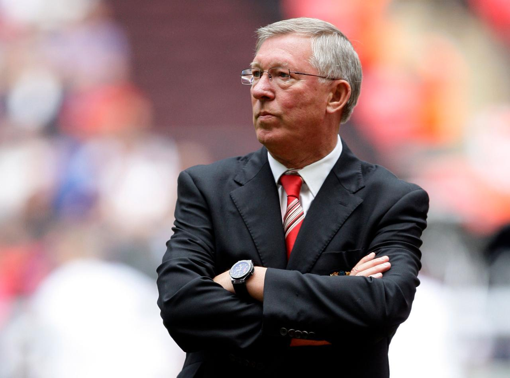
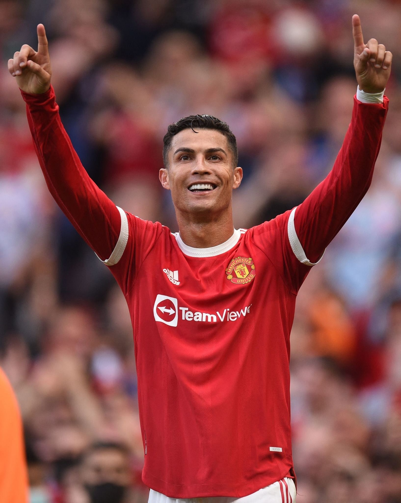
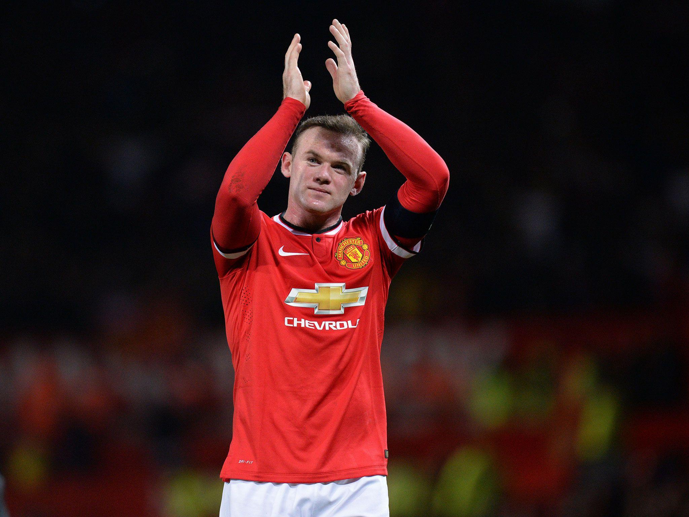
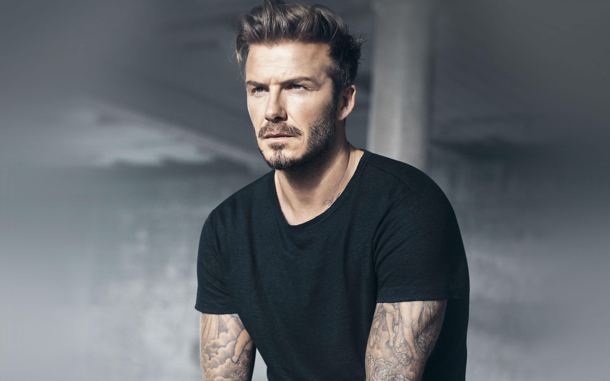

CLUB LEGENDS
Sir Alexander Chapman Ferguson CBE (born 31 December 1941) is a Scottish
former football manager and player, best known for managing Manchester
United from 1986 to 2013. He is widely regarded as one of the greatest
managers of all time and has won more trophies than any other manager in
the history of football.[5] Ferguson is often credited for valuing youth
during his time with Manchester United, particularly in the 1990s with
the "Class of '92", who contributed to making the club one of the
richest and most successful in the world. Ferguson was appointed manager
of Manchester United in November 1986. During his 26 years with
Manchester United he won 38 trophies, including 13 Premier League
titles, five FA Cups, and two UEFA Champions League titles. He was
knighted in the 1999 Queen's Birthday Honours list for his services to
the game.[7] Ferguson is the longest-serving manager of Manchester
United, having overtaken Sir Matt Busby's record on 19 December 2010. He
retired from management at the end of the 2012–13 season, having won the
Premier League in his final season. Ferguson was appointed manager of
Manchester United in November 1986. During his 26 years with Manchester
United he won 38 trophies, including 13 Premier League titles, five FA
Cups, and two UEFA Champions League titles. He was knighted in the 1999
Queen's Birthday Honours list for his services to the game.[7] Ferguson
is the longest-serving manager of Manchester United, having overtaken
Sir Matt Busby's record on 19 December 2010. He retired from management
at the end of the 2012–13 season, having won the Premier League in his
final season.

Ronaldo's move to Manchester United was completed on 12 August 2003, too
late for the 2003 FA Community Shield but in time for their game against
Bolton Wanderers on the opening day of the 2003–04 season, and made him
the first Portuguese player to sign for the club.[37] His transfer fee
made him, at the time, the most expensive teenager in English football
history.[38] Although he requested the number 28, his number at
Sporting, he received the squad number 7 shirt, which had previously
been worn by such United players as George Best, Eric Cantona and David
Beckham.[39] Wearing the number 7 became an extra source of motivation
for Ronaldo.[40] A key element in his development during his time in
England proved to be Ferguson, of whom he later said: "He's been my
father in sport, one of the most important and influential factors in my
career." As a result of his performances, he amassed a host of personal
awards for the season. He won the Professional Footballers'
Association's Player's Player, Fans' Player and Young Player of the Year
awards, as well as the Football Writers' Association's Footballer of the
Year award,[74][75] becoming the first player to win all four main PFA
and FWA honours.[76] His wages were raised to £120,000 a week as part of
a five-year contract extension.[77] Ronaldo was named runner-up to Kaká
for the 2007 Ballon d'Or,[78] and came third, behind Kaká and Lionel
Messi, in the running for the 2007 FIFA World Player of the Year
award.[79] Ronaldo scored his first hat-trick for United in a 6–0 win
against Newcastle United on 12 January 2008, which put United top of the
league table.[80] On 19 March, he captained United for the first time in
a home win over Bolton and scored both goals in a 2–0 win.[81] His
second goal was his 33rd of the campaign, surpassing George Best's total
of 32 goals in the 1967–68 season, setting the club's new single-season
record by a midfielder.[82] His 31 league goals earned him the Premier
League Golden Boot,[83] as well as the European Golden Shoe, which made
him the first winger to win the latter award.[84] He additionally
received the PFA Players' Player of the Year and FWA Footballer of the
Year awards for the second consecutive season.[85][86] In the knockout
stage of the Champions League, Ronaldo scored the decisive goal against
Lyon to help United advance to the quarter-finals 2–1 on aggregate;[87]
while playing as a striker, he scored with a header in the 3–0 aggregate
win over Roma.[88] United reached the final against Chelsea in Moscow on
21 May, where, despite his opening goal being negated by an equaliser
and his penalty kick being saved in the shoot-out,[89] United emerged
victorious 1–1, winning the penalties 6–5.[90][91] As the Champions
League top scorer, Ronaldo was named the UEFA Club Footballer of the
Year. Ronaldo scored a total of 42 goals in all competitions during the
2007–08 season, his most prolific campaign during his time in England.

Wayne Mark Rooney (born 24 October 1985) is an English professional
football manager and former player who is the manager of EFL
Championship club Birmingham City. He spent much of his playing career
as a forward while also being used in various midfield roles. Widely
considered one of the best players of his generation, Rooney is the
record goalscorer for Manchester United. Rooney was given the number 8
shirt upon his arrival at Old Trafford.[72] He made his United debut on
28 September in a 6–2 home win over Fenerbahçe in the UEFA Champions
League, scoring a hat-trick and laying on an assist.[73] These goals
made Rooney the youngest player to score a hat-trick in the Champions
League aged 18 years 335 days.[74] His first season with Manchester
United, however, ended without winning a trophy as they could only
manage a third-place finish in the league,[75] and failed to progress to
the last eight of the Champions League.[76] United had more success in
the cup competitions, but were edged out of the League Cup in the
semi-finals by a Chelsea side[77] who also won the Premier League title
that season.[78] Rooney's second goal in the FA Cup against
Middlesbrough on 29 January 2005, a volley hit with the outside of his
right foot from the edge of the 18-yard box, was named BBC Goal of the
Season.[79] A goalless draw with Arsenal in the FA Cup final was
followed by a penalty shoot-out defeat.[80] Rooney was United's top
league scorer that season with 11 goals, and was credited with the PFA
Young Player of the Year award.[81] Rooney won the PFA Players' Player
of the Year and the FWA Footballer of the Year awards for the 2009–10
season, and he has won the Premier League Player of the Month award five
times throughout his career. He came fifth in the vote for the 2011 FIFA
Ballon d'Or, and he was named in the FIFA FIFPro World XI for 2011. He
won the Goal of the Season award by the BBC's Match of the Day poll on
three occasions, and his February 2011 bicycle kick against city rivals
Manchester City won the Premier League 20 Seasons Awards Best Goal award
In June 2007, Rooney was given squad number 10, last worn by Ruud van
Nistelrooy.[96][97] Rooney reasoned that he always loved that
number.[98] He fractured his left metatarsal in United's opening-day
goalless draw against Reading on 12 August,[99] the same injury he had
suffered to his right foot in 2004.[100] After being sidelined for six
weeks, he returned and scored in United's 1–0 Champions League group
stage win over Roma on 2 October.[101] Rooney was again injured on 9
November, hurting his ankle during a training session and missing an
additional two weeks.[102] His next match after injury was against
Fulham on 3 December, in which he played 70 minutes.[103] Rooney missed
ten games and finished the 2007–08 season with 18 goals (12 of them in
the league),[86] as United clinched the Premier League.[104] In the
Champions League's first-ever all-English final,[105] United defeated
league rivals Chelsea to win another trophy

David Robert Joseph Beckham OBE is an English former professional
footballer, the current president and co-owner of Inter Miami and
co-owner of Salford City.[6] Known for his range of passing, crossing
ability and bending free-kicks as a right winger, Beckham has been
hailed as one of the greatest and most recognisable midfielders of his
generation, as well as one of the best set-piece specialists of all
time.[7][8] Due to his talent and achievements for both club and
country, Beckham is additionally lauded as one of the greatest
Manchester United footballers of all time,[9][10][11] as well as one of
the best English players in the history of the sport.[12][13][14] He is
the first English player to win league titles in four countries:
England, Spain, the United States and France. Beckham's professional
club career began with Manchester United, where he made his first-team
debut in 1992 at age 17. With United, he won the Premier League title
six times, the FA Cup twice and the UEFA Champions League in 1999.
United manager Sir Alex Ferguson had a great deal of confidence in the
club's young players. Beckham was part of a group of young talents
Ferguson brought into United in the 1990s In the 1998–99 season, he was
part of the United team that won the treble of the Premier League, FA
Cup and Champions League, a unique feat in English football until
Manchester City's 2022-23 season.[63] There had been speculation that
the criticism that he had received after being sent off in the World Cup
would lead to him leaving England, but Beckham decided to stay at
Manchester United.[64] To ensure they would win the Premier League
title, United needed to win their final league match of the season, at
home to Tottenham. There were reports suggesting that the opposition
would allow themselves to be beaten to prevent their local rivals
Arsenal from retaining the title, but Tottenham took an early lead in
the match.[63] Beckham scored the equaliser with a curling strike from
twelve yards out, after receiving the ball on the right side of the
penalty area, placing the ball into the top left corner of the goal;
United went on to win the match 2–1 and the league
